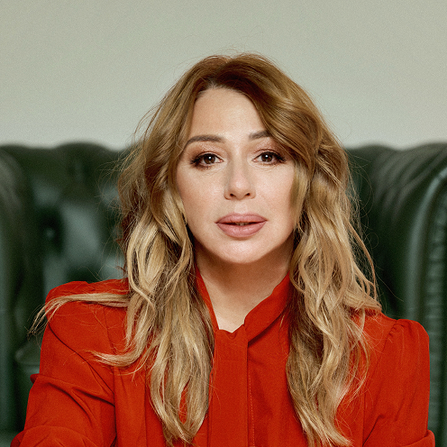

Зимний ретродень Московского спорта
Зимний ретродень Московского спорта
Провожаем зиму с музыкой, спортивными забавами и винтажной атмосферой.
Богатырские испытания, валеночный боулинг, гиря-фест, керлинг и фигурное катание. Стильные фотозоны, самовар с чаем и самая длинная гирлянда пожеланий.
Приходите, чтобы атмосферно попрощаться с зимой и выиграть подарки.
Карта фестиваля

Сцена
- 11:00Начало мероприятия
- 12:00Утренняя зарядка
- 13:00Шоу спортсменов
- 13:30Выступление Алены Апиной
- 14:30Шоу спортсменов
- 15:00
 Выступление Валерии
Выступление Валерии - 16:00Зумба
- 17:00
 Выступление Дмитрия Маликова
Выступление Дмитрия Маликова

Зимние аттракционы 11:30–18:00
Испытайте силу, ловкость и смелость в настоящих богатырских забавах.


Фан-встречи
Уникальная возможность встретиться и пообщаться со своими кумирами из мира спорта. Не пропустите!


Горка
Ретрофестиваль на катке «Южный»
Праздник на льду перенесет участников в прошлое, где они будут исполнять зажигательные танцы под популярные ретрокомпозиции и участвовать в спортивных играх их бабушек и дедушек.
На протяжении всего мероприятия Вас ждут: мастер-класс от Александра Энберта, викторина на знание советского спорта и русских сказок, тематическая ретрофотозона, выступление кавер-группы, дискотека на льду под хиты 60-80хх, викторины и розыгрыши подарков.
Лыжно-биатлонная трасса

Вопросы и ответы
На площадке работает пункт проката спортивного инвентаря — это бесплатно. Вы также можете прийти со своим оборудованием, чтобы не стоять в очереди.